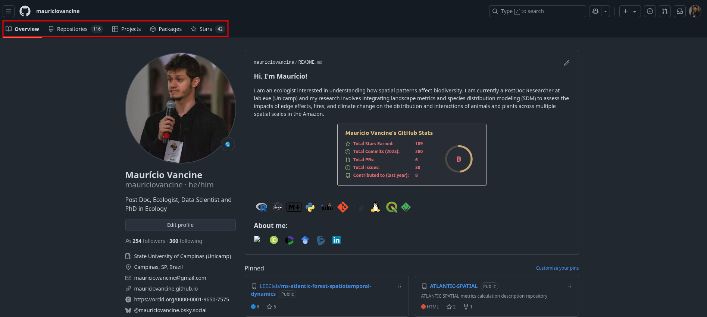
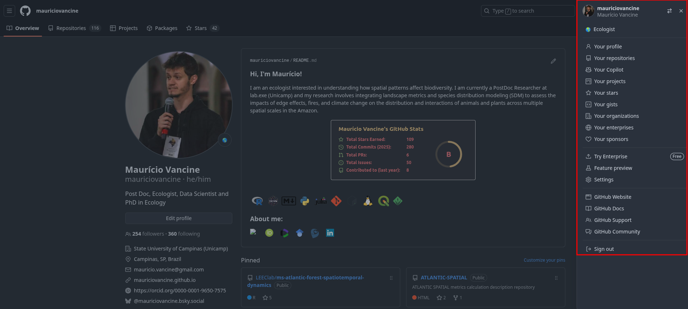
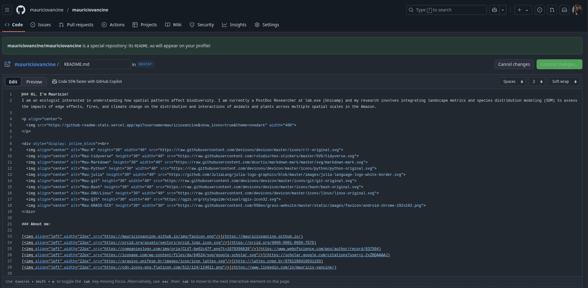
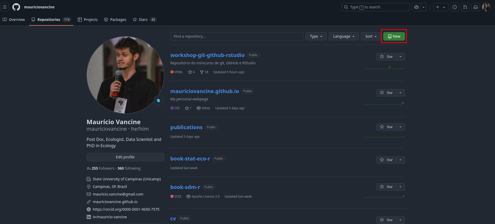
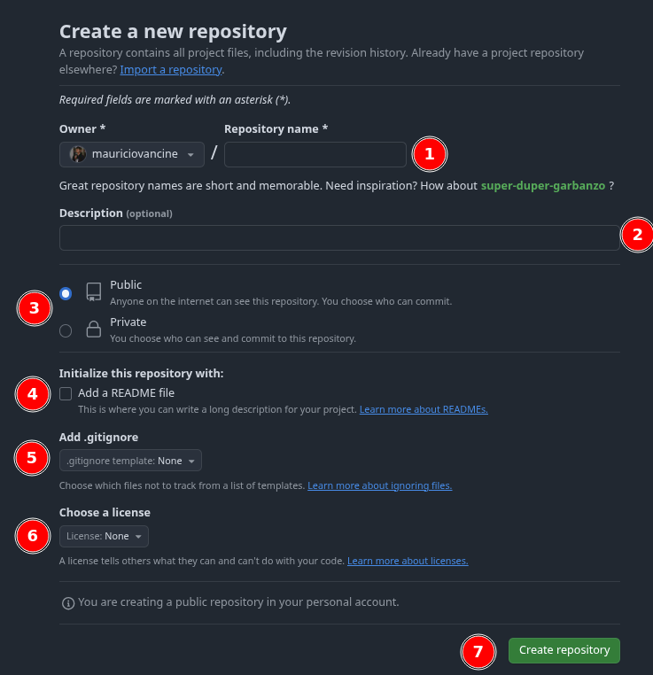
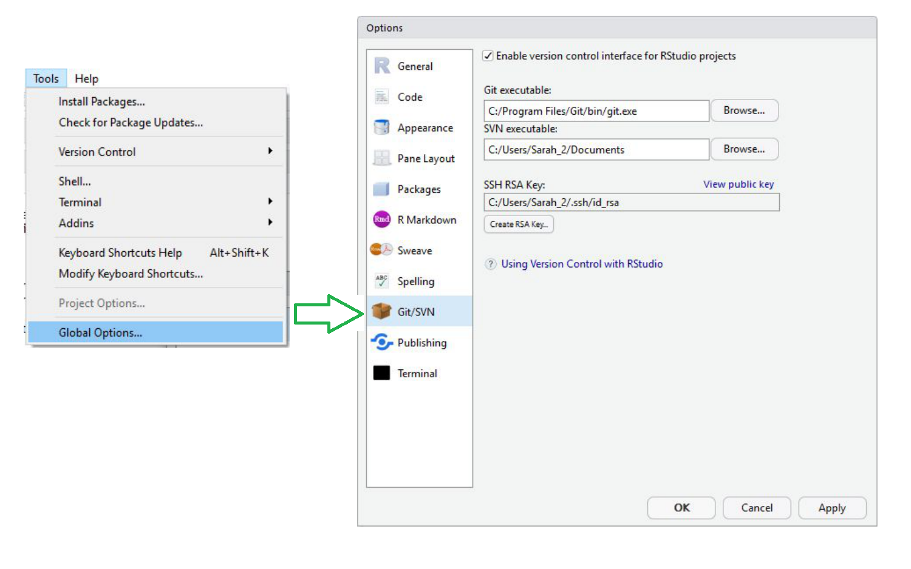

Introdução ao controle de versão com git, GitHub e RStudio
Principais conceitos de controle de versão usando git
Contextualização
Nas disciplinas que ofereço, geralmente eu começo com uma parte de controle de versão usando git. Em 2021 ofereci um minicurso para o pessoal da Universidade Federal Rural de Pernambuco (UFRPE).
Falando com o Prof. Diogo Provete sobre disciplinas e como ensinar git, chegamos à conclusão que é fundamental ter um material didático sobre esse assunto.
Este tutorial aborda os conceitos gerais de controle de versão usando o git e sua integração com o GitHub e o RStudio.
Recomendo também olhar o minicurso gitR: controle de versão com git, GitHub e RStudio. Este post é a transcrição do mesmo.
1. Conferindo os computadores
É necessário verificar se os seguintes softwares estão instalados e atualizados:
Além disso, é interessante conhecer softwares que fazem o controle de versão usando uma interface:
2. Controle de versão
O controle de versão permite manejar projetos de forma organizada e colaborativa. Por exemplo:
- Versionamento de arquivos
- Controle individual de projetos
- Controle colaborativo de projetos
- Controle de versões no tempo
O git é uma principal ferramenta utilizada em grandes projetos científicos. Além disso, seu uso é cada vez mais necessário em colaborações internacionais.
Dois manuscrito demonstram isso:
3. git e GitHub
O que é git?
- Software para controle de versão.
- Gerencia repositórios locais e remotos.
Criado por Linus Torvalds em 2005 para o desenvolvimento do Kernel Linux, é um software livre distribuído sob a licença GNU GPL v2.
Fonte: kernel.org
Vídeo introdutório sobre git:
O que é GitHub?
- Plataforma de hospedagem de repositórios remotos.
- Oferece ferramentas para controle de versão e colaboração.
Além do GitHub, há outras plataformas como:

Atenção aos conceitos:
- git: software de controle de versão.
- GitHub: plataforma de hospedagem de código versionado.

Fonte: Is Git the Same Thing as Github!?
4. Detalhes do GitHub
Perfil

Seções importantes:
- Overview: informações pessoais.
- Repositories: lista de repositórios.
- Projects: gerenciador visual de tarefas.
- Packages: bibliotecas e containers.
- Stars: repositórios favoritos.
Configurações
Para acessar: superior direito > foto do perfil > Settings

Repositório

Principais abas de um repositório:
- Code: arquivos, histórico e README.md.
- Issues: reportar e gerenciar problemas.
- Pull requests: propostas de alterações.
- Actions: automação de fluxos de trabalho.
- Projects: gerenciador visual (Kanban).
- Wiki: documentação detalhada.
- Security: segurança do código.
- Insights: análises.
- Settings: configurações gerais.
README.md
Arquivo principal de documentação, escrito em Markdown:

- Visível na página inicial do repositório.
- Explica objetivos, estrutura e uso do projeto.
Mais sobre Markdown:
Markdown
Markdown Guide
5. Criando um repositório
Para criar um repositório: Perfil > Repositories > New

Preencha:
- Nome
- Descrição (opcional)
- Público ou privado
- Adicionar README.md
- Adicionar .gitignore
- Licença
Clique em “Create repository”.

Prática 2: Criar página inicial no GitHub

Passos:
- Criar um repositório com seu nome de usuário (e.g.
mauriciovancine). - Criar arquivo
README.md. - Preencher com conteúdo em Markdown.
- Commitar e verificar o perfil.
Fonte: Como criar um README para seu perfil no GitHub
6. Configurações: RStudio, git e GitHub
Configuração no RStudio

Acesse: Tools > Global Options > Git/SVN

Marque Enable version control interface for RStudio projects.
Configure o caminho do Git executable:
- Windows:
C:/Program Files/Git/bin/git.exe - Ubuntu:
/usr/bin/git - Mac:
/usr/bin/git(em geral)
- Windows: